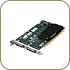
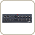
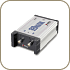
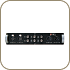
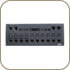
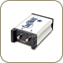

Hardware Specifications
|  | TARGA Ciné
Engine 64-bit PCI board with 2 Digital Tether port connections for plug-and-play configuration of breakout boxes HUB-3 video processing engine for 8/16 bit YUV or 8-bit RGBA native processing in real-time 128 MB of on-board SDRAM |
|  | Pro Analog Video: Analog composite, component, S-Video, reference in (BNC) Audio: Analog unbalanced -10 dB (RCA); balanced +4 dB (XLR) Pro Digital (SDI) |
|  | Pro Digital (SDI) Serial digital interface (SMPTE 259M) resolution at 10-bits with embedded audio @ 20-bit/48 KHz |
|  | Pro Digital Plus I/O for uncompressed standard definition Serial Digital Interface (SDI) video Supports up to four channels of AES/EBU audio Supports monitoring of analog Composite Video and RCA unbalanced audio |
|  | Pro Digital &
Analog Video: Composite, component, S-Video, analog 10-bit, serial digital (SMPTE 259M) resolution at 10-bits Audio: 4 in/6 out analog balanced audio, 4 in/4 out AES/EBU digital audio @ 20-bit/48 KHz, 2 in/2 out S/PDIF digital audio, 2 in/2 out unbalanced audio, 8 in/8 out TDIF digital audio, SDI embedded audio @ 20-bit/48 KHz |
|  | Pro HD Digital
(HD-SDI) HD serial digital interface (SMPTE 292M) with embedded audio @ 20-bit/48 KHz Supports 1080i/30, 1080i/29.97, 1080i/25, 1080p/24, and even true 1080p/23.98 fps There is also limited support for 720p |